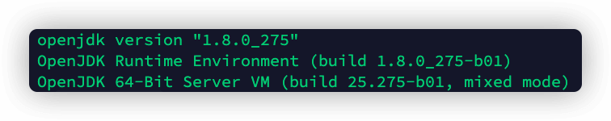

🌍 环境
- 服务商：成都腾讯云
- 配置：CPU1核，内存1G，带宽2M，硬盘50G
- 系统：CentOS 7.2
🔧 前置工作
这些前置工作每一个都必须做好，否则就不能愉快的配置好你的游戏服务器了🥶。
1.安装Java环境
Minecraft服务端程序的依赖环境是Java，所以服务器必须安装好Java环境才可以启动游戏服务程序。输入如下指令检查环境：
java -version
如果提示java: command not found则代表Java环境未配置好，需要安装JDK；如果显示了版本号如1.8，则可以跳过此步骤。
未配置好Java环境的同学请输入如下指令安装Java：
yum install -y java
安装完成后，再次输入java -version指令检查，如下图能显示版本号则代表环境配置成功。

2.安装Linux指令工具
安装wget,unzip,screen,vim这四个工具，否则之后的步骤输入某些命令会提示command not found。输入如下指令开始安装：
yum -y install "wget" "unzip" "screen" "vim"
3.放行端口
部分云服务商可能对服务器的端口进行了限制，导致游戏连接服务器可能会出现connection refused（拒绝连接）的问题，需要提前把Minecraft的端口放出去，以腾讯云为例：
3.1 配置安全组

3.2 配置安全组
点击安全组名称，进入编辑页面。

添加入站规则，来源为all，协议端口为TCP:25565，即放行25565端口。

如果你的服务器还装有服务器面板等带有安全功能的软件，请一并放行25565端口。
🏃♀️ 创建
1.准备好MC服务端应用程序文件
这一步相当简单，只需要注意一点：服务端版本需要和客户端版本一致。
登录服务器后，选一个目录创建文件夹存放游戏服务端文件，例如我是/opt/mc，接着在该目录输入如下指令：
wget https://s3.amazonaws.com/Minecraft.Download/versions/你要下载的版本号/minecraft_server.你要下载的版本号.jar
当然如果你有自己的服务端jar包可自行通过FTP等方式上传到该目录。
2.启动服务端应用程序
按照如下指令格式启动服务器：
java -Xms[初始启动分配内存] -Xmx[最大分配内存] -jar [jar包所在路径]/minecraft_server.[版本号].jar nogui
例如：
java -Xms512m -Xmx1024m -jar minecraft_server.1.16.2.jar nogui
启动过程中，会有一分钟左右的时间用于创建世界，请耐心等待结束。
关于最后一个参数nogui的使用是为禁用GUI界面，节省系统内存。
运行失败的解决方案：
我们在第一次运行完jar包后，无论是否运行成功，都能发现当前目录下多出了一堆文件，运行失败的时候其实就是配置除了一点问题。我们在当前目录找一下文件eula.txt：
vim eula.txt
按i键进入编辑模式，用方向键找到如下一行并修改成：
eula=false
接着按esc键退出编辑模式，再输入:wq保存修改并退出，最后尝试重新运行一次启动指令即可。
3.连接服务器
在游戏客户端里直接输入你服务器的公网地址并连接即可，无需输入端口号。
💇♂️ 完善
虽然创建游戏服务端的步骤很简单，但我们还有一些地方可以优化，虽然这些是非必要的，但完善有助于我们更稳定的游玩游戏。
1.关闭正版验证
正版游戏启动器玩家可以无视这步。想要非正版游戏启动器玩家加入服务器是必须完成这一步的。用vim命令对server.properties文件进行编辑：
vim server.properties
将online-mode:true这一行修改成false。
如何用vim命令修改文件内容请参见运行失败那一步的步骤或自行搜索。

其他的配置项可自行搜索了解，了解每个配置项有助于你更好的管理服务器。
2.创建游戏启动执行脚本
每次启动游戏服务程序时都手打很长一串的java指令是极其不明智的，我们可以将java启动指令封装起来。
用vim命令创建一个文件start-mc.sh，并把java指令输入进去：
java -Xms512m -Xmx1024m -jar minecraft_server.1.16.2.jar nogui
保存并退出，下次启动游戏就不必再打一大长串的java指令了，只需要输入：
bash start-mc.sh
即可启动服务器.
3.保持服务会话
一般服务器和ssh工具都会有连接会话的超时设置，在一段时间没有在服务器上操作后，会自动断开ssh会话，这时这个会话中的任务就会被杀掉，那小伙伴们游戏玩着玩着就与服务器断开连接了。
在前置工作中我们已经安装好了screen工具，通过这个工具可以解决上述问题，至于原理你可以理解成原本只能在前台运行的程序现在可以挂到后台运行了。
新建一个名为mymcs的screen会话（注意区分大小写）：
screen -S mymcs
再把启动指令挂上去，例如输入上一步的启动游戏脚本的指令并回车执行（java启动指令也行，反正需要一个可执行的指令）：
bash start-mc.sh
游戏服务程序启动完成之后，可以输入Ctrl + A + D的组合键退出会话（不会结束游戏的服务端程序），从而在服务器上干别的事情。
如果你想要重新连接这个会话，输入这个指令重新连接会话：
screen -R mymcs
🥳 Enjoy!
教程到此结束，享受你的游戏吧！